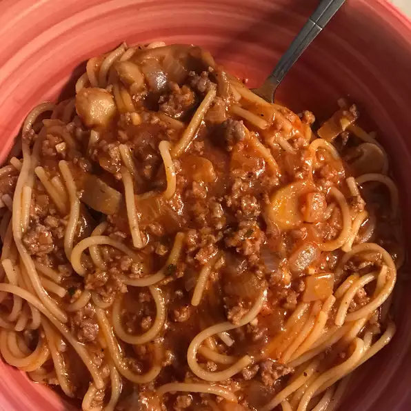

Spaghetti

Description
This is a recipe for spaghetti
Ingredients
- ½ pound ground beef
- 1 small onion, chopped
- 2 (8 ounce) cans tomato sauce
- 1½ cups water
- 1½ teaspoons salt
- 1 teaspoon dried parsley
- ½ pinch dried basil
- ½ teaspoon black pepper
- 4 ounces uncooked spaghetti
Steps
-
In a large skillet over medium heat, brown the ground beef with the
onion until all pink is gone; drain.
-
Stir in tomato sauce, water, salt, parsley, basil and pepper; mix well.
Heat until sauce boils. Break spaghetti in half and drop into sauce a
little at a time. Cover and turn to low.
-
Cook until spaghetti is tender, approximately 20 to 25 minutes. Stir
occasionally to keep from sticking to pan and from noodles sticking
together. Add water, 1/2 to 1 cup, if it starts to dry out and noodles
are not cooked.